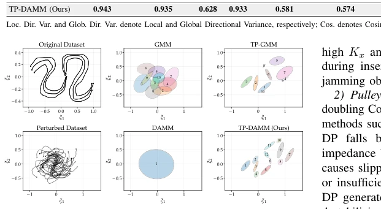

Fig. 3. Phase-wise analysis of one representative successful and failed trial per task. (Top) Snapshots of execution phases completed by VIDP and corresponding failed task phases by Stiff-DP for (a) and (b) and Compliant-DP for (c). (Middle) Cartesian stiffness profiles inferred by VIDP, dynamically modulated to accommodate task constraints. (Bottom) Interaction forces and tracking errors over time. Fixed-impedance baselines experience severe force spikes, causing jamming in (a) Peg-in-Hole Insertion and slipping in (b) Pulley Assembly, or large tracking errors causing workspace collisions in Cable Routing. In contrast, VIDP adapts its compliance to safely and precisely complete all task phases. Experiment trials can be found in the attached video.
Fig. 1. Overview of VIDP. (Left) Diverse kinematic demonstrations are collected across varying spatial layouts. (Top Right) TP-DAMM extracts spatially and directionally consistent trajectory distributions. (Bottom Right) Their variances are mapped to stiffness profiles, enabling a Diffusion Policy to jointly predict pose actions and task compliance from real-time visual and state observations for deployment on a variable impedance controller.

Fig. 2. Visual comparison of clustering methods on a spatially perturbed 2D PC-GMM dataset. Standard GMM merges opposing motions, while DAMM fails to adapt to global spatial shifts. TP-GMM aligns frames but cannot separate overlapping opposing directions. Conversely, TP-DAMM successfully preserves both the task-frame spatial structure and local motion directionality, closely estimating the original unperturbed task distribution.
Fig. 4. Peak and mean interaction forces during successful trials of (a) Peg-in- Hole Insertion and (b) Pulley Assembly. While Stiff-DP provides the necessary tracking precision for these tasks, it generates high and unpredictable force spikes during rigid contact. By modulating stiffness based on the task’s physical constraints, VIDP keeps interaction forces within a significantly lower and narrower range, ensuring safer manipulation.